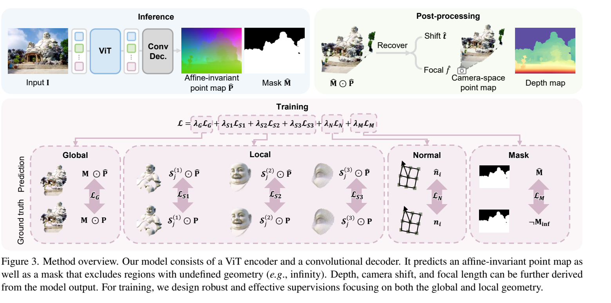
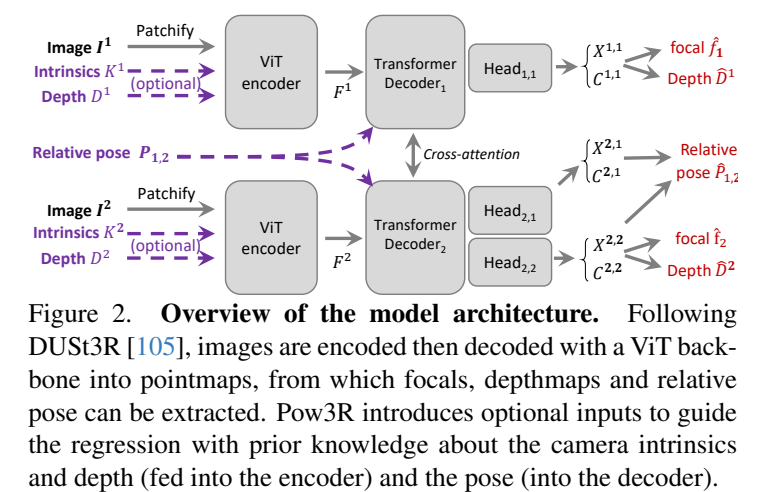
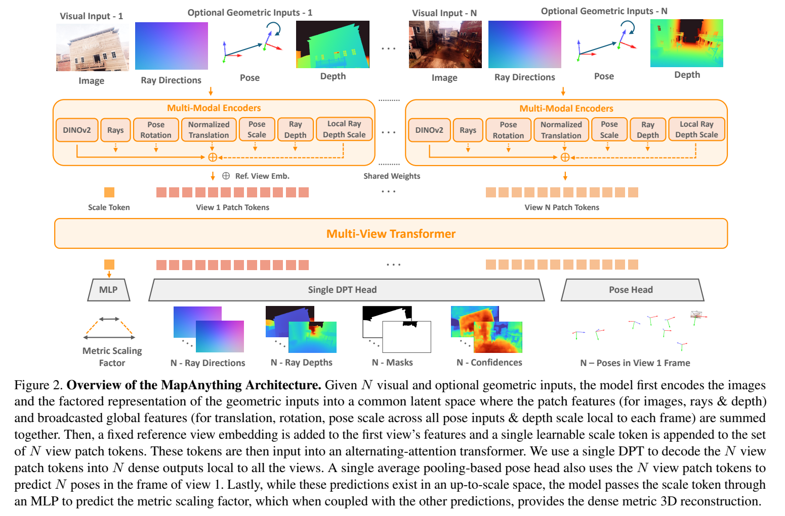
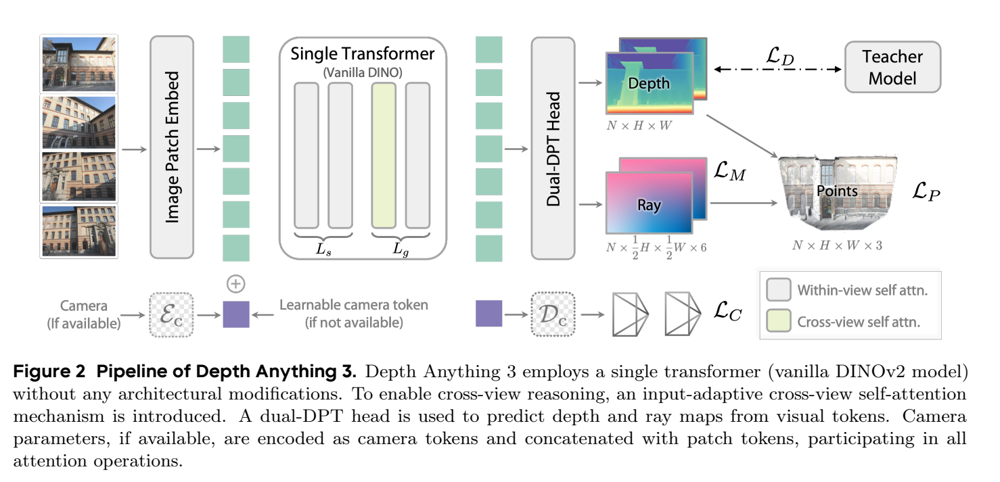

H01 / 2024-01 / P2
Depth Anything
以教师伪标签扩大未标注图像训练，结合语义特征约束提升开放域相对深度能力。
输入与运行
单张 RGB
单图深度
证据与阅读边界
§3；§4.2–4.5：六个未见深度数据集、metric 微调及数据/特征消融。
单目深度是几何先验，不能独立提供多视相机与共同尺度；metric 版本需另行微调。
带着问题读：相对深度教师的收益如何进入多视重建，哪些量仍须由多视约束恢复？
哪些几何量可从观测约束，哪些来自数据先验？已知信息如何进入网络？
单张图像能提供透视、遮挡、纹理梯度和物体语义，却通常不能唯一确定绝对尺度。把一间房及相机位置同时放大，投影图像可以完全相同。因此本章区分三类能力：从数据学到的尺度先验、由多视视差约束的相对形状，以及由真实尺度测量确定的 metric 几何。
阅读单目模型时，先问输出是 inverse depth、z-depth、相机系点图还是射线距离；再问评测允许 scale、shift 或相似变换中的哪些对齐。一个在 affine disparity 协议上表现好的模型，不一定给出形状正确的三维点云。
采用 camera-to-world 的 Tᵢ=[Rᵢ,tᵢ]。令像素齐次坐标为 p̃，z-depth 为 z，射线单位向量为 r，则：
将所有 Xʷ 与相机中心乘同一个正尺度，图像投影不变；但固定相机中心只改变深度，不是同一 gauge 变换。已知内参使射线方向确定，通常仍不能恢复绝对尺度；已知 metric baseline 或可信深度则可以约束尺度。
如果预测逆深度 q 满足 q′=a q+b，则深度为 z′=1/(a/z+b)=z/(a+bz)。b≠0 时，近点与远点受到的缩放不同，不能用一个整体尺度恢复原形状。相反，MoGe 先在点坐标中允许共同 scale 与 shift，再通过投影关系求相机焦距及 z 方向偏移；两种“affine-invariant”不是同一个输出空间。
MoGe 的训练表示也不意味着可以自由旋转、剪切物体。该模型保持图像与 X/Y 轴方向关系，并在中心主点、方形像素假设下求 f 与 t_z。详见 MoGe 方法推导。
| 输出空间 | 代表方法 | 信息从哪里来 | 应检查的代价 |
|---|---|---|---|
| 相对深度先验 | Depth Anything / V2 | 大规模图像、教师与合成几何 | 局部细节不等于跨帧一致或绝对尺度 |
| 单目三维形状 | MoGe / MoGe-2 | 点图监督、局部几何损失；后者增加 metric 属性 | 焦距假设、形状与尺度预测误差需分列 |
| 条件式重建 | Pow3R / MapAnything / MetricAnything | 可选相机、深度或稀疏测量 | 条件准确性、缺失模式、单位与尺度归一化 |
Pow3R 将条件加入两图 pointmap 框架，MapAnything 将其扩展到因子化多视 metric 重建。MetricAnything 从稀疏 metric 提示学习泛化的尺度恢复。它们不能仅用“支持额外输入”合为一类：需要具体查看训练时见过的提示分布、输入是否归一化，以及模型是软融合还是严格满足约束。

用对全局尺度与平移不敏感的 pointmap 监督缓解焦距—距离歧义，再恢复焦距与相机方向的深度偏移。
动机 · 方法 · 原图 · 实验 ↗
把可用几何信息编码进 DUSt3R，并增加第二视图自身坐标系 pointmap，支持不同条件组合。
动机 · 方法 · 原图 · 实验 ↗
把几何拆成单位局部射线、ray-depth、相机位姿和独立 metric scale，并用随机条件输入训练一个通用模型。
动机 · 方法 · 原图 · 实验 ↗
用预训练单一 ViT 的部分跨视图注意力与 Dual-DPT 预测 depth-ray；通过教师标签改善几何监督。
动机 · 方法 · 原图 · 实验 ↗以教师伪标签扩大未标注图像训练，结合语义特征约束提升开放域相对深度能力。
单张 RGB
单图深度
§3；§4.2–4.5：六个未见深度数据集、metric 微调及数据/特征消融。
单目深度是几何先验，不能独立提供多视相机与共同尺度；metric 版本需另行微调。
高容量教师在精确合成深度上训练，再经大规模真实图像伪标签传给学生，强化细结构与域泛化。
单张 RGB
单目教师—学生
§2–5；§6–7：DA-2K、传统基准、教师/数据消融与 metric 版本。
默认输出相对逆深度；metric 需微调。真实深度基准的噪声会掩盖边界改善。
原文 · 2406.09414v2 · 本地全文文本 · 总览记录
交叉阅读：08 · 监督、预训练与数据质量
用对全局尺度与平移不敏感的 pointmap 监督缓解焦距—距离歧义，再恢复焦距与相机方向的深度偏移。
单张 RGB
单图 pointmap＋相机恢复
§3.1–3.3；§4.1–4.3：点图、深度、局部几何和监督表示消融。
此处 affine-invariant 也不是任意3×3仿射；恢复焦距/shift 有小规模求解步骤。
把可用几何信息编码进 DUSt3R，并增加第二视图自身坐标系 pointmap，支持不同条件组合。
两图＋可选内参、相对位姿、稀疏／稠密深度
条件式两图前馈
§3.1–3.4；§4.1–4.5：条件引导、MVS、相机与结构消融。
条件已知程度改变问题难度；不能将带真实深度或相机的结果与纯 RGB 直接并列。
原文 · 2503.17316v1 · 本地全文文本 · 总览记录
交叉阅读：01 · 通用多视几何：表示与参考系
在 MoGe 的相对形状预测之外单独回归 metric scale，并改进真实数据监督以恢复细节。
单张 RGB
单图形状／尺度解耦
§3.2–3.3；§4.1–4.3、附录：metric几何、边界、分辨率与尺度设计。
尺度从先验预测；不能由“metric”推断无需校准就能提供测量级绝对距离。
原文 · 2507.02546v1 · 本地全文文本 · 总览记录
交叉阅读：01 · 通用多视几何：表示与参考系
以稀疏 metric prompt 统一多来源深度预训练，再蒸馏成无需提示的学生，连接补全与单目 metric 几何。
RGB＋可选稀疏 metric depth
稀疏提示预训练＋蒸馏
§3.1–3.3；§4–6：补全、超分、无提示任务与数据/架构/传感器泛化分析。
不是 MapAnything；区分有测量提示的模型与完全无提示的学生及其焦距/深度任务。
原文 · 2601.22054v2 · 本地全文文本 · 总览记录
交叉阅读：08 · 监督、预训练与数据质量
| 证据入口 | 真正检验的内容 | 不能直接推出 |
|---|---|---|
| MoGe §4.1 / §4.3 | 多种点图、深度和 FoV 协议；ROE 与局部损失消融 | affine 对齐后好，就能无尺度测量给出真实米制 |
| Depth Anything V2 §6–7 | 教师、合成标注和真实伪标签对细节及泛化的贡献 | 相对逆深度版本等价于 metric 微调版本 |
| Pow3R Table 1 / Figure 6 | 同一模型下条件子集的收益；错误 focal / pose 的响应 | 软条件网络始终严格遵从输入或可靠拒绝任意错误输入 |
| MapAnything Figure 4 / Table 5 | 多视数量、条件信息与表示分解的影响 | 额外真值几何带来的提高全属于骨干设计 |
训练目标与表示对单目三维形状很关键；准确的附加几何通常能改善重建；不同输入组合可以共享模型，而不必每种条件都单独训练。
混合相机设备、错误单位、运动物体深度和偏移后的主点，可能超出条件训练分布。平均误差改善不能证明每个条件都被安全使用，也不能证明尺度在长视频里一致。
场景与物体。常见物体的尺寸可能给单目模型提供较强统计线索；房间、街道和未知物体尺度跨度更大。用物体类别先验猜中尺寸，与用传感器约束真实尺度有不同的失效方式。
条件并非总是越多越好。深度和位姿来源可能相关，例如同一个 SfM 系统产生两者。把相关误差当作两条独立证据，会造成过度信任。裁剪图像时若不更新主点，正确内参也会变成错误条件。
建议的拆分。同时记录未对齐 metric error、仅尺度对齐 shape error、焦距误差、边界质量和条件残差。这样才能判断改进来自形状、相机还是整体尺度校正。
| 假设 | 控制与干预 | 若出现什么结果则削弱假设 |
|---|---|---|
| 稀疏深度的位置比数量更重要 | 固定测量数和噪声，比较均匀、边界、远近分层采样；报告未对齐误差 | 策略差异在多域重复实验中小于随机方差 |
| 软条件融合能识别跨模态冲突 | 分别扰动 K、pose、depth，并加入联合相关偏差；同时看条件残差和置信度 | 错误条件导致大幅偏差但分数不降低 |
| metric 提升主要是尺度而非局部形状 | 对同一预测分别计算未对齐、scale-only 与 scale+shift 指标 | 对齐后的局部误差仍显著降低，则不能仅归因于尺度 |
以上是本阅读地图提出的实验设计，不是论文已验证的结论。
表格与方法讨论按固定来源核对；本页统一记号、比较框架及研究假设属于阅读分析。跨论文分数保留各自协议，未进行模型复现。
§3.1–3.4；§4.1–4.5：条件引导、MVS、相机与结构消融。
§3；§4.4 表6、§4.5 表7、附录 A.2/A.4/A.6：顺序鲁棒性与训练条件。
§3.1–3.3；§4 表5(a)(b)：表示与尺度解耦、通用条件训练对专用训练。
§3–4；§7.2 表6–7：输出目标、注意力安排、共享头、教师监督消融。
原文 · README 2026-10-24 快照 · 本地全文文本
官方 README：2025-12-28 更新、Engineering Update、输入输出接口。
§3；§4 与附录：约170序列、最长64帧的四数据集 allocentric tracking 设置。
§3.1–3.3；§4.2–4.3：DL3DV 域内与 ScanNet++ 域外比较。
§3；§4.2–4.5：六个未见深度数据集、metric 微调及数据/特征消融。
§3.1–3.3；§4.1–4.3：点图、深度、局部几何和监督表示消融。
§3.2–3.3；§4.1–4.3、附录：metric几何、边界、分辨率与尺度设计。
§3.1–3.3；§4–6：补全、超分、无提示任务与数据/架构/传感器泛化分析。
§2–5；§6–7：DA-2K、传统基准、教师/数据消融与 metric 版本。